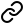

About
I study computer science at Unical. I'm interested in computers, C/C++, the command line, and Linux.
The image I use as my profile picture is a portion of Sunday Visitors by George Hughes, which i found on r/Art a while ago.
This website
is my little corner of the Web. It's made out of HTML and CSS, that's it. No tracking, cookies, analytics or JavaScript. It doesn't even use custom fonts, since your computer probably has some already. Appearance and layout are very simple, but hopefully accessible.
I plan to expand it and improve it with time. I'll make the source and the scripts publicly available in the near future.
Icons are from lucide.dev.